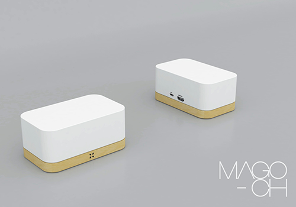
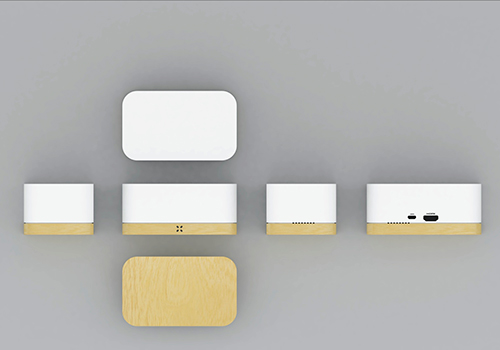
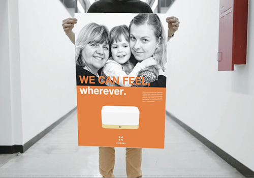

about 何をやっている会社?    chikaku は「距離も時間も超えて人をつなげる」サービスや製品を創るために起ち上げたアーリーステージのスタートアップです。Webサービス、スマホアプリ、ハードウェアと幅広い分野のテクノロジーを用い、徹底的にユーザ目線に立ち、永く愛されるソリューションを開発・提供します。どれだけ離れていても互いの存在をチカクに感じる。どこにいても、どんな人にとっても。
Team どんな人がやっている会社？ 創業メンバーは、マーケティング/セールスや新規事業の起ち上げ経験が豊富なApple出身者のCEOを始め、ハードとソフトを高度なレベルで統合する作品やサービスを展開することで国内外で高い評価を得る元チームラボのメンバー、Webマーケティングの専門家、国際的なデザインアワードでの入賞歴があるデザイナーなど、多様なバックグラウンドを持つプロジェクトメンバーが日々サービス開発と事業起ち上げの準備に邁進しています。 梶原 健司 Kenji Kajiwara CEO 大山宗哉 Sohya Ohyama ディレクター 穴井裕樹 Yuki Anai 開発 川本麻衣子 Maiko Kawamoto その他
Company 会社概要 法人名: 株式会社チカク 住所: 〒106-0047 東京都港区南麻布2丁目1−17 白ビル3F 法人設立日: 平成 26年 3月 12日 資本金: 5,000万円 従業員数: 1名
 住所:
住所: